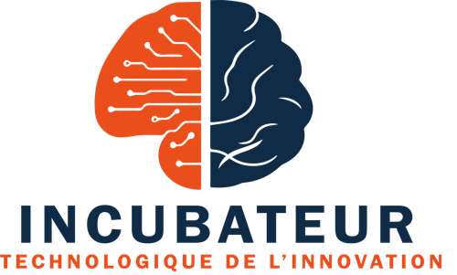
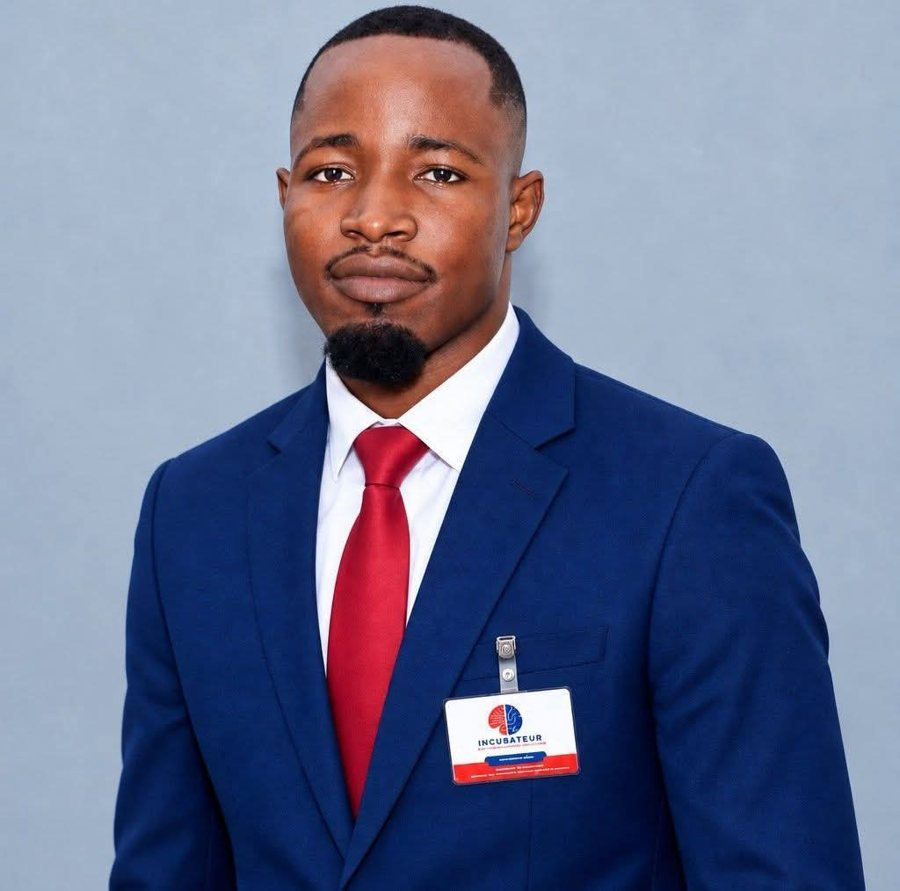
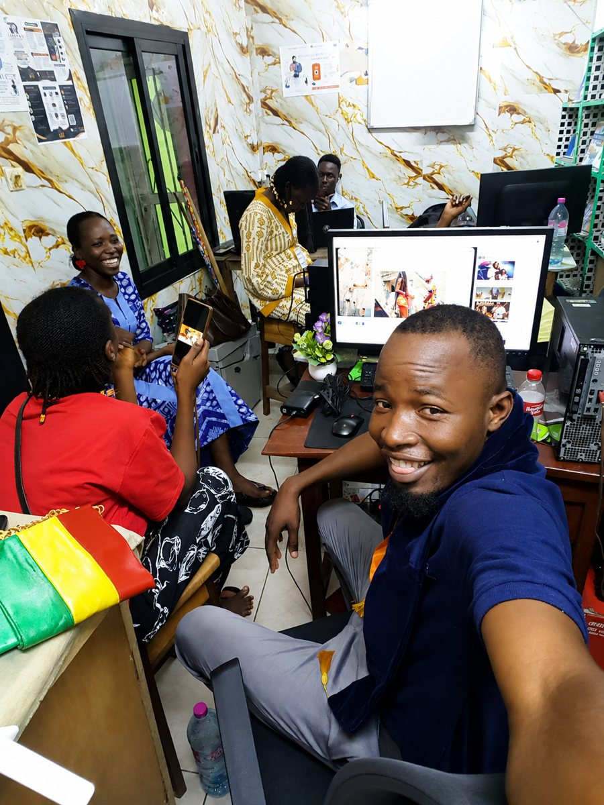
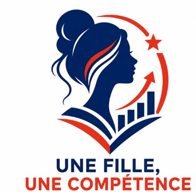
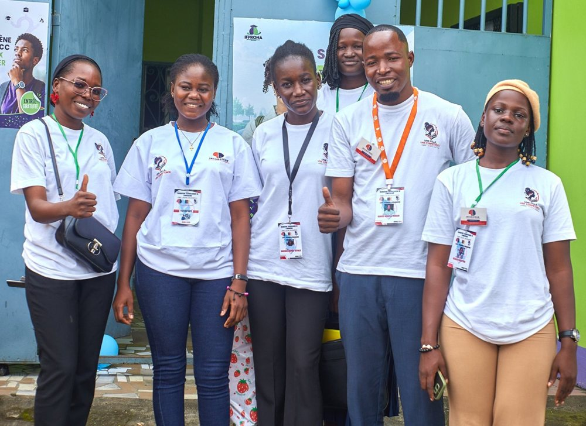
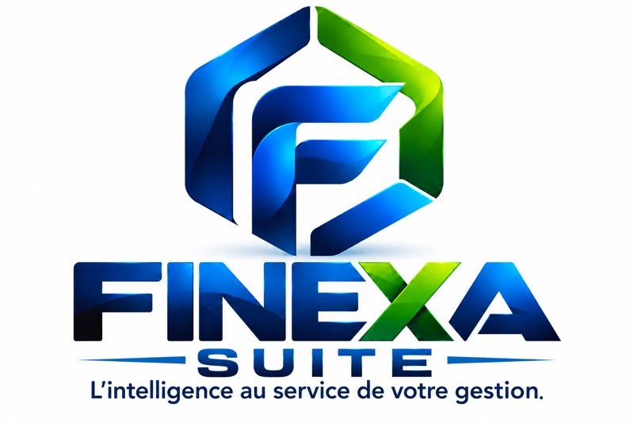
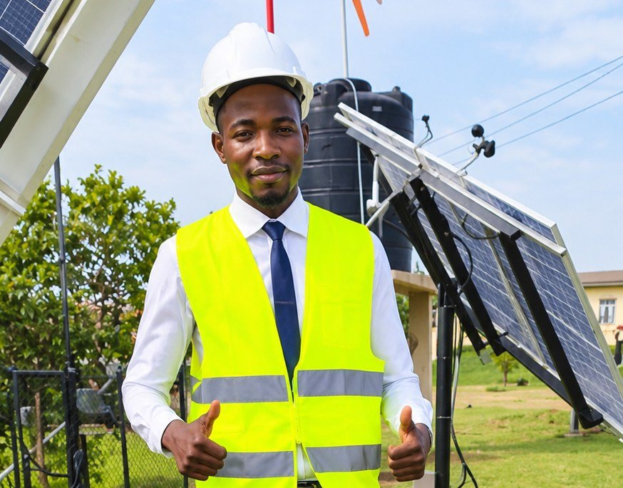
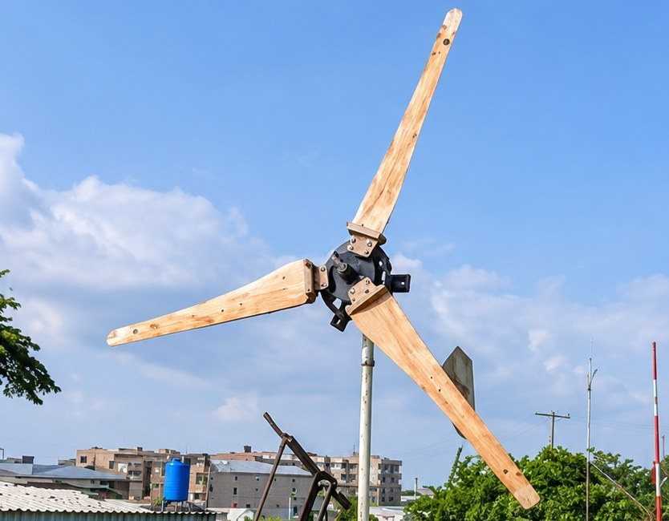
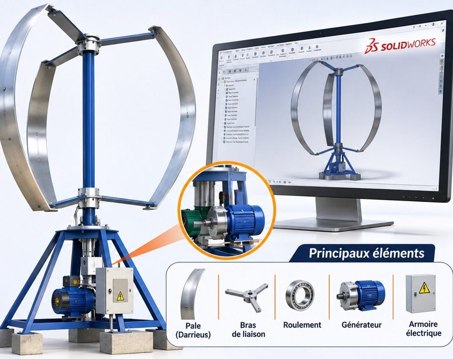

Ouinou
Ngassala
Romain

Profil
Je travaille entre le Cameroun et le Tchad, là où l’électrotechnique, la formation et le numérique se rejoignent.
Ma base est technique : un Brevet de Technicien en électrotechnique au LETIN de N’Djamena, puis le DIPET I à l’ENSET de l’Université de Douala.
Mes stages m’ont conduit en entreprise comme en salle de classe, de la maintenance industrielle à l’enseignement des disciplines techniques.
Depuis 2022, je réunis ces deux expériences à l’ITI, à Douala. Je complète aujourd’hui ce parcours par une spécialisation en qualité, hygiène, sécurité et environnement.
Domaines d’expertise
Ce que je propose
Former vos équipes aux outils numériques
Des formations pour les entreprises sur l’utilisation des outils numériques en général, l’intelligence artificielle comprise, avec une orientation vers vos usages concrets.
Concevoir le logiciel adapté à votre usage
Chaque activité a ses propres besoins. Je conçois des logiciels adaptés à chaque utilisation, en m’appuyant sur l’expérience acquise avec FINEXA Suite.
Former les enseignants
Un accompagnement des enseignants et des établissements pour construire les curricula et les programmes de formation, selon l’approche par compétences.
Avec l’ITI, nous intervenons aussi en
Électricité, automatisme, robotique, réseaux, Arduino
SolidWorks, AutoCAD, MS Project
Électrique, informatique et industrielle
Équipements électriques et électroniques
Télécommunications, vidéosurveillance, systèmes de sécurité
Montage et suivi de projets, automatisation par l’IA
Incubateur Technologique de l’Innovation
L’ITI est ma structure de formation, de maintenance technique et d’accompagnement de projets, basée à Douala.
Elle rassemble les compétences dont une entreprise ou un porteur de projet a besoin : se former, équiper, maintenir et développer un outil.
Retrouvez l’ITI sur incubateurtech.tech.


Une Fille, Une Compétence

Ce programme, mené avec l’ITI et en partenariat avec l’IFPRONA, donne à des jeunes filles des compétences numériques et administratives pour travailler ou entreprendre.
Au programme : secrétariat bureautique, assistance de direction, gestion de sites web, comptabilité assistée, Canva, IA et prise de parole.
FINEXA Suite
L’intelligence au service de votre gestion.
FINEXA Suite est ma gamme de logiciels professionnels pour les entreprises, les pharmacies, les établissements de formation et les organisations de l’espace OHADA. FINEXA ERP a déjà été installé et testé.
FINEXA ERP fonctionne sans Internet
modem ou Wi‑Fi
et téléphones
Vos données restent sur votre serveur et vos postes travaillent ensemble, même là où la connexion manque.

Énergies renouvelables
Produire l’électricité au plus près de ceux qui en ont besoin : c’est le fil de mes projets sur le vent et le solaire.

Chad Green Energy
Une initiative de promotion des énergies renouvelables au Tchad, notamment par l’installation de panneaux solaires dans les régions de l’Est, où l’accès à l’énergie reste difficile.

Éolienne de 500 W
Conception et réalisation au Tchad d’une petite éolienne à axe horizontal, pour expérimenter la production décentralisée d’électricité à partir du vent.

Éolienne Darrieus
Une éolienne à axe vertical, associée à un dispositif de génération et de stockage, pour l’éclairage public autonome. Calculs et conception réalisés sous SolidWorks, dans le cadre d’un projet académique à l’ENSET de Douala.
Parcours
Formation
ESSEC, Université de Douala
ENSET, Université de Douala
ENSET, Université de Douala
Lycée Technique Industriel de N’Djamena (LETIN)
Collège-lycée général de Ba-Illi, Chari-Baguirmi
Stages professionnels
Électrotechnique et maintenance industrielle.
Stages pédagogiques
Préparation des cours, encadrement des apprenants, enseignement des disciplines techniques.
Expérience
Engagement associatif
Ce qui guide mon travail
Vous avez une équipe à former, un logiciel à concevoir, un programme à bâtir ou une installation à faire suivre ? Écrivez-moi, nous regarderons ensemble votre besoin.